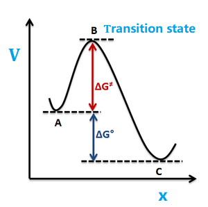

Kramers Reaction Rate Theory¶
- Date
28 July 2019
Dependency¶
What is the problem ?¶

TO BE MODIFIED¶
\[\require{mhchem}
\ce{A <=> B ->[k^+] C}\]
Let the transition state \(B\) correspond to reaction coordinate \(x=x^{\ne}\)
Derivation¶
Step 1 Transition State Theory (TST)
\[\begin{split}\begin{align*}
& k^+ = {\text{flux} \over N_A} \\
& \text{and}\\
& \text{flux} = \underbrace{{N^{\ne} \over \Delta x}}_{\text{density}}
\underbrace{\langle v^{\ne} \rangle}_{velocity} \\
& {N^{\ne} \over N_A} = {z^{\ne} \over z_A} \; (\text{Boltzmann Factor})\\
\Rightarrow & k^+ = {z^{\ne} \over z_A} {\langle v^{\ne} \rangle \over \Delta x}
\end{align*}\end{split}\]
Step 2 Find \(z^{\ne}\)
\[\begin{split}\begin{align*}
& z^{\ne} = {1\over h} \int dp
\int_{x^{\ne}-{\Delta x \over 2}}^{x^{\ne}+{\Delta x \over 2}}
dx \; \exp[{p^2\over 2m}+V(x)] \\
&\text{Assume } V=const \text{ around } x^{\ne}\\
\Rightarrow z^{\ne} & = {1\over h} \Delta x\; e^{-\beta V(x^{\ne})}
\sqrt{2\pi m \beta}
\end{align*}\end{split}\]
Step 3 Find \(z^A\)
TO BE ADDED
Step 4 Find \(\langle v^{\ne} \rangle\)
TO BE ADDED
Step 5 Combining above
\[\boxed{
k^+ = {\omega_A \over 2\pi}e^{-\beta V(x^{\ne})} \;\;\; \text{TST}
}\]
Step 6 Modify TST to get Kramers Theory
TO BE FURTHER EXPLAINED
\[\boxed{
k^+ = {1\over \omega_B}\left(-{\gamma \over 2}+\sqrt{{\gamma^2 \over 4}+\omega_B^2}\right)
\left\{
{\omega_A \over 2\pi}e^{-\beta V(x^{\ne})}
\right\} \;\;\; \text{Kramers}
}\]